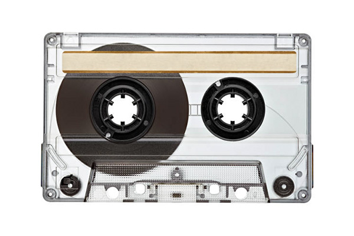
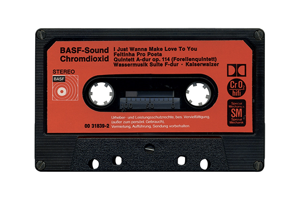
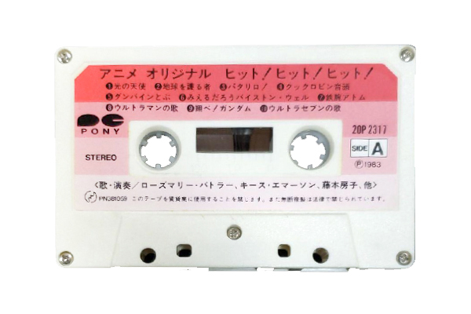

TAPE
CASSETTE
CASSETTE
This ImageNets project explores various cassette tape designs through 6 categorised colours. This page showcases different designs of cassette tapes from past to present. The 36 photos were sourced from various websites such as YouTube, Flickr and online shops including eBay and Etsy and displays designs from U.S., Taiwan, Japan, Korea and more.
Generic Blank Tape

Deep Wave - Chill Out 80's(2017)
DupeShop Blank Tape (2017)
Generic Blank Tape
Ateez - Treasure EP 2: Zero to One (2019)
 Song Machine, Season One: 2D Cassette (2020)
Song Machine, Season One: 2D Cassette (2020)

Various Artists - BASF-Sound Chromdioxid (1973)
中國娃娃 - 單眼皮女生 (2000)
Beastie Boys - Paul's Boutique (1989)
Retro Style Media Red Blank Cassette Tape
Pinegrove - Marigold (2020)
MSX (RAM32K)
나훈아 - 22주년 기념 Best Hit 곡 Vol.1 (1989)
The Walt Disney Company - Children's Favourites Vol. 1 (1979)
The Maine - You Are Ok (2019)
PC-8001用 テープ・ソフトウエア
Song Machine, Season One: Murdoc Cassette (2020)
THE SHINS - wincing the night away (2007)
Shinee - 1 of 1 (2016)
ウルトラマン80 (1980)
C0208 ちびっ子マンガ箱
TWENTY ONE PILOTS - TRENCH (2018)
Barbie and the Rockers Soundtrack (1987)
Sony Low-Noise C120 Blank Tape
Apple Computer Inc. - Lemonnade (1973)
Maxell Compact Cassette C-60
Dire Straits - Love over Gold (1982)
Sony Auto-Sensor C-60 Blank Tape
BTS - Map of the Soul: Persona Fanmade Tape (2020)
Barbie and the Beat - The Beat, Shine and Jammin' (1990)
ウルトラマン 80 (1981)
初恋インビテーション (2020)
f(x) - Pink Tape (2013)

Various Artists - アニメ・オリジナル・スーパー・ヒット (2010)
For this ImageNet project, I decided to explore many cassette tape designs from past to present. Recently, cassette tapes became trending because of the unique aesthetic and nostalgia it brings. I sourced 36 images from many websites such as Etsy, eBay, and Mercari and small vintage shops or music shops worldwide. The images were clean edited in Photoshop. Wrong perspective, white balance, lighting, ratio, cropping are fixed and adjusted to the same size. I decided to categorize the designs by colors because that was more accessible and more enjoyable to view than genres or countries. For easy navigation, I decided to use a fixed left menu bar, but it can distract the viewing experience as it takes a lot of space and has an intense color. I tried to fix these issues by adding the corresponding color to each category and minimizing the space using vertical text. On CSS and JavaScript, I added transition and interactive navigation to enhance viewing and interactive experience for the user. I decided to keep the overall website design neat and straightforward to create an archive look by desaturating the photos and using a simple white background and direct typography.
2 https://www.istockphoto.com/photos/clear-cassette-tape
3 https://dupeshop.com.au/Audio-Cassette-Selection-Guide.html
4 https://www.freepik.com/free-photo/transparent-tape-collection-top- view_5519531.htm
5 https://paypaymall.yahoo.co.jp/store/maxellshop/item/852783/
6 http://www.yulu365.net/yuedu/show-2205.html
2 https://www.etsy.com/listing/696028316/ateez-treasure-ep-2-zero-to-one- cassette
3 https://www.soundonsound.com/sound-advice/q-which-settings-should-i- use-encode-tape-cassettes
4 https://www.ruten.com.tw/item/show?21849155040649
5 https://www.citynews1130.com/2017/02/17/retro-resurgence-the-unlikely- return-of-cassette-tapes-in-canadian-music/
6 https://www.retrostylemedia.co.uk/product/red-blank-c90-audio-cassette- tapes-3
2 https://sabotenkids.blog.ss-blog.jp/20160911
3 http://itempage3.auction.co.kr/DetailView.aspx?itemno=B661790151
4 https://www.youtube.com/watch?v=BqnwXNO_gXE&app=desktop
5 https://shop.81twentythree.com/products/you-are-ok-cassette-gold
6 https://ameblo.jp/panpukin-pie-pie/entry-11057119693.html
2 https://tapeheadcity.com/products/the-shins-wincing-the-night-away- cassette-tape-rock
3 https://www.instiz.net/name_enter/38711671
4 https://www.mercari.com/jp/items/m78217921258/
5 https://shop.81twentythree.com/products/you-are-ok-cassette-gold
6 https://twentyonepilots.warnerartists.net/uk/trench-cassette-bundle.html
2 http://www.retro8.com/item/cddudding.htm
3 https://osxdaily.com/2011/04/06/apple-cassette-tape/
4 https://www.ruten.com.tw/item/show?21849155040649
5 https://www.citynews1130.com/2017/02/17/retro-resurgence-the-unlikely- return-of-cassette-tapes-in-canadian-music/
6 https://nishimurasound.jp/blog/archives/8339
2 https://www.flickr.com/photos/53468332N05/5281488279/
3 https://www.mercari.com/jp/items/m78217921258/
4 https://vvstore.jp/i/vv_000000000208131/
5 https://www.etsy.com/listing/644372016/fx-pink-tape-cassette? ref=shop_home_active_5
6 https://www.mercari.com/jp/items/m58961456788/